你好，我是陈航。今天，我们来聊一聊 Flutter 应用的交付这个话题。
软件项目的交付是一个复杂的过程，任何原因都有可能导致交付过程失败。中小型研发团队经常遇到的一个现象是，App 在开发测试时没有任何异常，但一到最后的打包构建交付时就问题频出。所以，每到新版本发布时，大家不仅要等候打包结果，还经常需要加班修复临时出现的问题。如果没有很好地线上应急策略，即使打包成功，交付完成后还是非常紧张。
可以看到，产品交付不仅是一个令工程师头疼的过程，还是一个高风险动作。其实，失败并不可怕，可怕的是每次失败的原因都不一样。所以，为了保障可靠交付，我们需要关注从源代码到发布的整个流程，提供一种可靠的发布支撑，确保 App 是以一种可重复的、自动化的方式构建出来的。同时，我们还应该将打包过程提前，将构建频率加快，因为这样不仅可以尽早发现问题，修复成本也会更低，并且能更好地保证代码变更能够顺利发布上线。
其实，这正是持续交付的思路。
所谓持续交付，指的是建立一套自动监测源代码变更，并自动实施构建、测试、打包和相关操作的流程链机制，以保证软件可以持续、稳定地保持在随时可以发布的状态。 持续交付可以让软件的构建、测试与发布变得更快、更频繁，更早地暴露问题和风险，降低软件开发的成本。
你可能会觉得，大型软件工程里才会用到持续交付。其实不然，通过运用一些免费的工具和平台，中小型项目也能够享受到开发任务自动化的便利。而 Travis CI 就是这类工具之中，市场份额最大的一个。所以接下来，我就以 Travis CI 为例，与你分享如何为 Flutter 工程引入持续交付的能力。
Travis CI
Travis CI 是在线托管的持续交付服务，用 Travis 来进行持续交付，不需要自己搭服务器，在网页上点几下就好，非常方便。
Travis 和 GitHub 是一对配合默契的工作伙伴，只要你在 Travis 上绑定了 GitHub 上的项目，后续任何代码的变更都会被 Travis 自动抓取。然后，Travis 会提供一个运行环境，执行我们预先在配置文件中定义好的测试和构建步骤，并最终把这次变更产生的构建产物归档到 GitHub Release 上，如下所示：
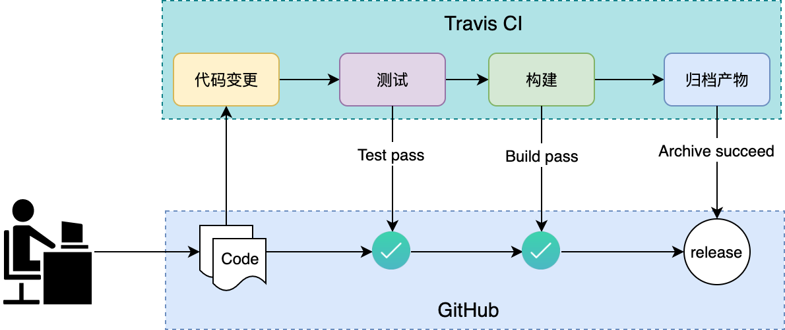
可以看到，通过 Travis 提供的持续构建交付能力，我们可以直接看到每次代码的更新的变更结果，而不需要累积到发布前再做打包构建。这样不仅可以更早地发现错误，定位问题也会更容易。
要想为项目提供持续交付的能力，我们首先需要在 Travis 上绑定 GitHub。我们打开Travis 官网，使用自己的 GitHub 账号授权登陆就可以了。登录完成后页面中会出现一个“Activate”按钮，点击按钮会跳回到 GitHub 中进行项目访问权限设置。我们保留默认的设置，点击“Approve&Install”即可。
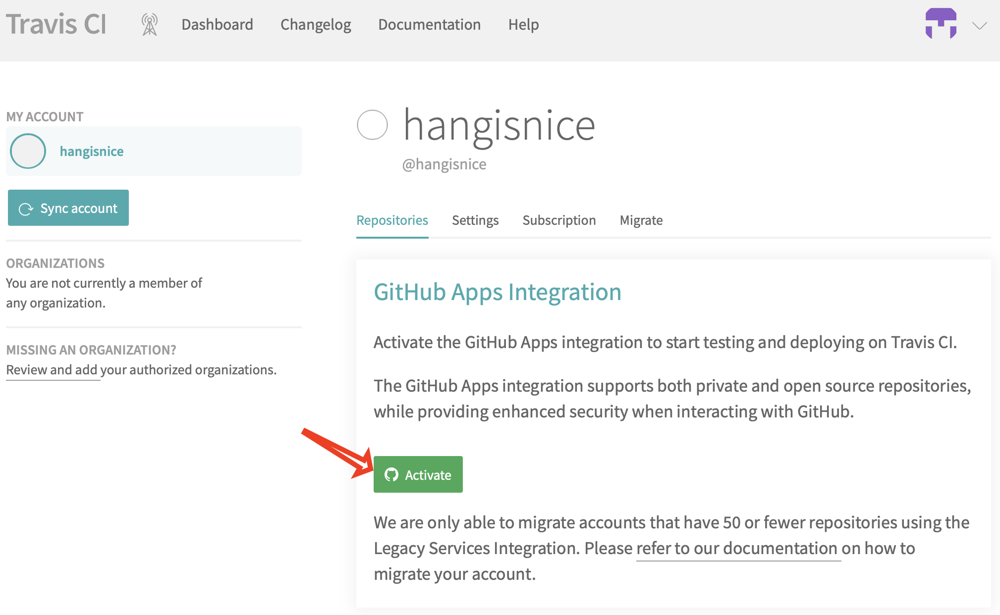
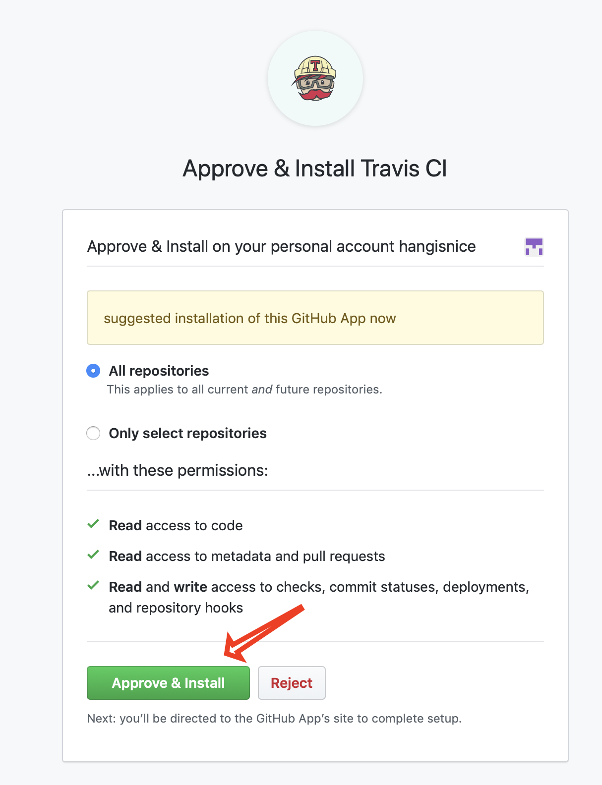
完成授权之后，页面会跳转到 Travis。Travis 主页上会列出 GitHub 上你的所有仓库，以及你所属于的组织，如下图所示：
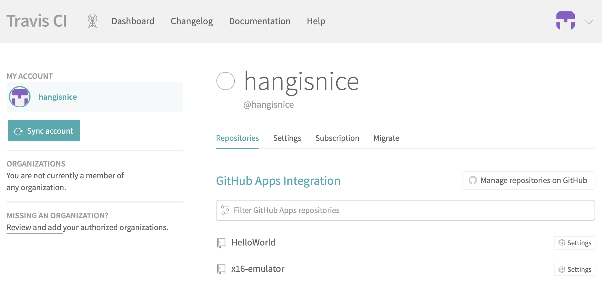
完成项目绑定后，接下来就是为项目增加 Travis 配置文件了。配置的方法也很简单，只要在项目的根目录下放一个名为.travis.yaml 的文件就可以了。
.travis.yaml 是 Travis 的配置文件，指定了 Travis 应该如何应对代码变更。代码 commit 上去之后，一旦 Travis 检测到新的变更，Travis 就会去查找这个文件，根据项目类型（language）确定执行环节，然后按照依赖安装（install）、构建命令（script）和发布（deploy）这三大步骤，依次执行里面的命令。一个 Travis 构建任务流程如下所示：
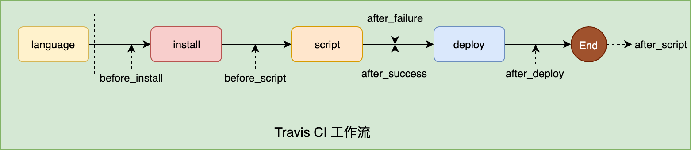
可以看到，为了更精细地控制持续构建过程，Travis 还为 install、script 和 deploy 提供了对应的钩子（before_install、before_script、after_failure、after_success、before_deploy、after_deploy、after_script），可以前置或后置地执行一些特殊操作。
如果你的项目比较简单，没有其他的第三方依赖，也不需要发布到 GitHub Release 上，只是想看看构建会不会失败，那么你可以省略配置文件中的 install 和 deploy。
如何为项目引入 Travis？
可以看到，一个最简单的配置文件只需要提供两个字段，即 language 和 script，就可以让 Travis 帮你自动构建了。下面的例子演示了如何为一个 Dart 命令行项目引入 Travis。在下面的配置文件中，我们将 language 字段设置为 Dart，并在 script 字段中，将 dart_sample.dart 定义为程序入口启动运行：
#.travis.yamllanguage: dartscript: - dart dart_sample.dart将这个文件提交至项目中，我们就完成了 Travis 的配置工作。
Travis 会在每次代码提交时自动运行配置文件中的命令，如果所有命令都返回 0，就表示验证通过，完全没有问题，你的提交记录就会被标记上一个绿色的对勾。反之，如果命令运行过程中出现了异常，则表示验证失败，你的提交记录就会被标记上一个红色的叉，这时我们就要点击红勾进入 Travis 构建详情，去查看失败原因并尽快修复问题了。
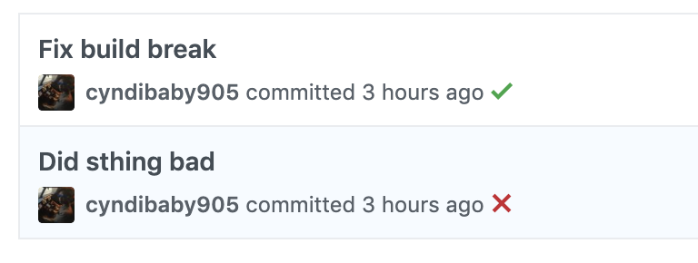
可以看到，为一个工程引入自动化任务的能力，只需要提炼出能够让工程自动化运行需要的命令就可以了。
在第 38 篇文章中，我与你介绍了 Flutter 工程运行自动化测试用例的命令，即 flutter test，所以如果我们要为一个 Flutter 工程配置自动化测试任务，直接把这个命令放置在 script 字段就可以了。
但需要注意的是，Travis 并没有内置 Flutter 运行环境，所以我们还需要在 install 字段中，为自动化任务安装 Flutter SDK。下面的例子演示了如何为一个 Flutter 工程配置自动化测试能力。在下面的配置文件中，我们将 os 字段设置为 osx，在 install 字段中 clone 了 Flutter SDK，并将 Flutter 命令设置为环境变量。最后，我们在 script 字段中加上 flutter test 命令，就完成了配置工作：
os: - osxinstall: - git clone https://github.com/flutter/flutter.git - export PATH="$PATH:`pwd`/flutter/bin"script: - flutter doctor && flutter test其实，为 Flutter 工程的代码变更引入自动化测试能力相对比较容易，但考虑到 Flutter 的跨平台特性，要想在不同平台上验证工程自动化构建的能力（即 iOS 平台构建出 ipa 包、Android 平台构建出 apk 包）又该如何处理呢？
我们都知道 Flutter 打包构建的命令是 flutter build，所以同样的，我们只需要把构建 iOS 的命令和构建 Android 的命令放到 script 字段里就可以了。但考虑到这两条构建命令执行时间相对较长，所以我们可以利用 Travis 提供的并发任务选项 matrix，来把 iOS 和 Android 的构建拆开，分别部署在独立的机器上执行。
下面的例子演示了如何使用 matrix 分拆构建任务。在下面的代码中，我们定义了两个并发任务，即运行在 Linux 上的 Android 构建任务执行 flutter build apk，和运行在 OS X 上的 iOS 构建任务 flutter build ios。
考虑到不同平台的构建任务需要提前准备运行环境，比如 Android 构建任务需要设置 JDK、安装 Android SDK 和构建工具、接受相应的开发者协议，而 iOS 构建任务则需要设置 Xcode 版本，因此我们分别在这两个并发任务中提供对应的配置选项。
最后需要注意的是，由于这两个任务都需要依赖 Flutter 环境，所以 install 字段并不需要拆到各自任务中进行重复设置：
matrix: include: # 声明 Android 运行环境 - os: linux language: android dist: trusty licenses: - 'android-sdk-preview-license-.+' - 'android-sdk-license-.+' - 'google-gdk-license-.+' # 声明需要安装的 Android 组件 android: components: - tools - platform-tools - build-tools-28.0.3 - android-28 - sys-img-armeabi-v7a-google_apis-28 - extra-android-m2repository - extra-google-m2repository - extra-google-android-support jdk: oraclejdk8 sudo: false addons: apt: sources: - ubuntu-toolchain-r-test packages: - libstdc++6 - fonts-droid # 确保 sdkmanager 是最新的 before_script: - yes | sdkmanager --update script: - yes | flutter doctor --android-licenses - flutter doctor && flutter -v build apk # 声明 iOS 的运行环境 - os: osx language: objective-c osx_image: xcode10.2 script: - flutter doctor && flutter -v build ios --no-codesigninstall: - git clone https://github.com/flutter/flutter.git - export PATH="$PATH:`pwd`/flutter/bin"如何将打包好的二进制文件自动发布出来？
在这个案例中，我们构建任务的命令是打包，那打包好的二进制文件可以自动发布出来吗？
答案是肯定的。我们只需要为这两个构建任务增加 deploy 字段，设置 skip_cleanup 字段告诉 Travis 在构建完成后不要清除编译产物，然后通过 file 字段把要发布的文件指定出来，最后就可以通过 GitHub 提供的 API token 上传到项目主页了。
下面的示例演示了 deploy 字段的具体用法，在下面的代码中，我们获取到了 script 字段构建出的 app-release.apk，并通过 file 字段将其指定为待发布的文件。考虑到并不是每次构建都需要自动发布，所以我们在下面的配置中，增加了 on 选项，告诉 Travis 仅在对应的代码更新有关联 tag 时，才自动发布一个 release 版本：
...# 声明构建需要执行的命令script: - yes | flutter doctor --android-licenses - flutter doctor && flutter -v build apk# 声明部署的策略，即上传 apk 至 github releasedeploy: provider: releases api_key: xxxxx file: - build/app/outputs/apk/release/app-release.apk skip_cleanup: true on: tags: true...需要注意的是，由于我们的项目是开源库，因此 GitHub 的 API token 不能明文放到配置文件中，需要在 Travis 上配置一个 API token 的环境变量，然后把这个环境变量设置到配置文件中。
我们先打开 GitHub，点击页面右上角的个人头像进入 Settings，随后点击 Developer Settings 进入开发者设置。
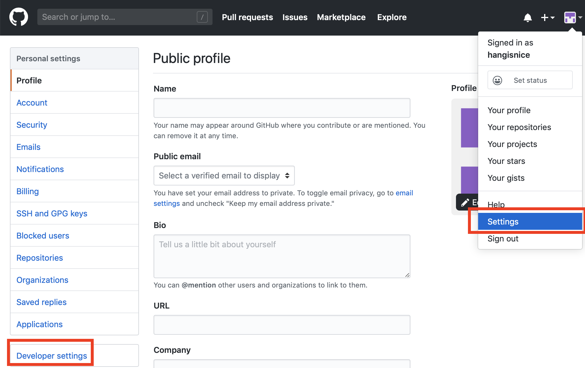
在开发者设置页面中，我们点击左下角的 Personal access tokens 选项，生成访问 token。token 设置页面提供了比较丰富的访问权限控制，比如仓库限制、用户限制、读写限制等，这里我们选择只访问公共的仓库，填好 token 名称 cd_demo，点击确认之后，GitHub 会将 token 的内容展示在页面上。
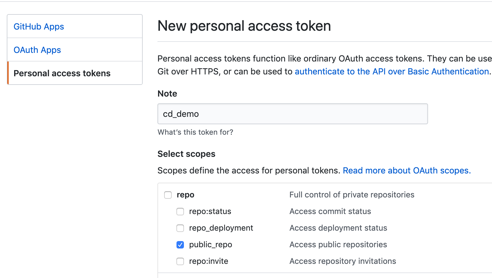
需要注意的是，这个 token 你只会在 GitHub 上看到一次，页面关了就再也找不到了，所以我们先把这个 token 复制下来。
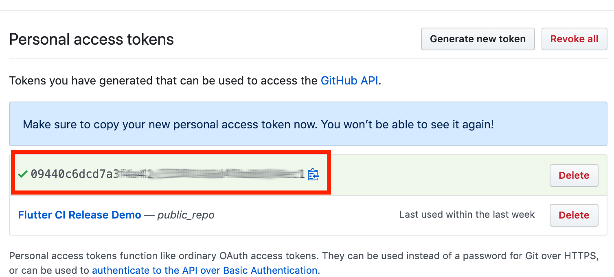
接下来，我们打开 Travis 主页，找到我们希望配置自动发布的项目，然后点击右上角的 More options 选择 Settings 打开项目配置页面。
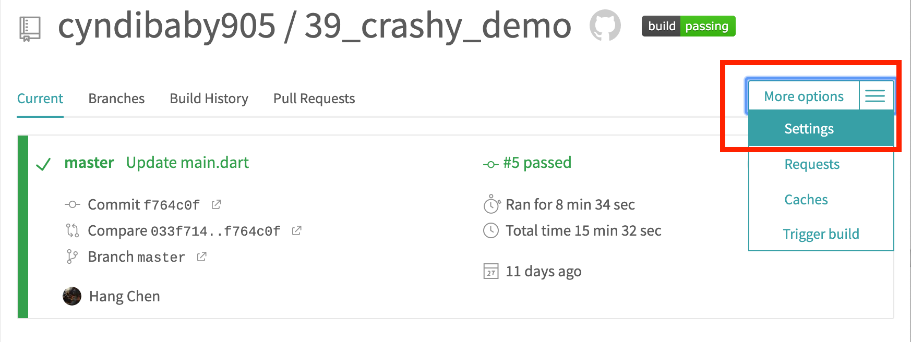
在 Environment Variable 里，把刚刚复制的 token 改名为 GITHUB_TOKEN，加到环境变量即可。
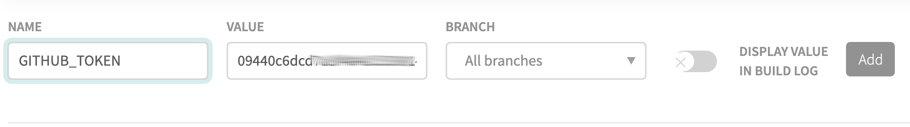
最后，我们只要把配置文件中的 api_key 替换成 ${GITHUB_TOKEN}就可以了。
...deploy: api_key: ${GITHUB_TOKEN}...这个案例介绍的是 Android 的构建产物 apk 发布。而对于 iOS 而言，我们还需要对其构建产物 app 稍作加工，让其变成更通用的 ipa 格式之后才能发布。这里我们就需要用到 deploy 的钩子 before_deploy 字段了，这个字段能够在正式发布前，执行一些特定的产物加工工作。
下面的例子演示了如何通过 before_deploy 字段加工构建产物。由于 ipa 格式是在 app 格式之上做的一层包装，所以我们把 app 文件拷贝到 Payload 后再做压缩，就完成了发布前的准备工作，接下来就可以在 deploy 阶段指定要发布的文件，正式进入发布环节了：
...# 对发布前的构建产物进行预处理，打包成 ipabefore_deploy: - mkdir app && mkdir app/Payload - cp -r build/ios/iphoneos/Runner.app app/Payload - pushd app && zip -r -m app.ipa Payload && popd# 将 ipa 上传至 github releasedeploy: provider: releases api_key: ${GITHUB_TOKEN} file: - app/app.ipa skip_cleanup: true on: tags: true...将更新后的配置文件提交至 GitHub，随后打一个 tag。等待 Travis 构建完毕后可以看到，我们的工程已经具备自动发布构建产物的能力了。
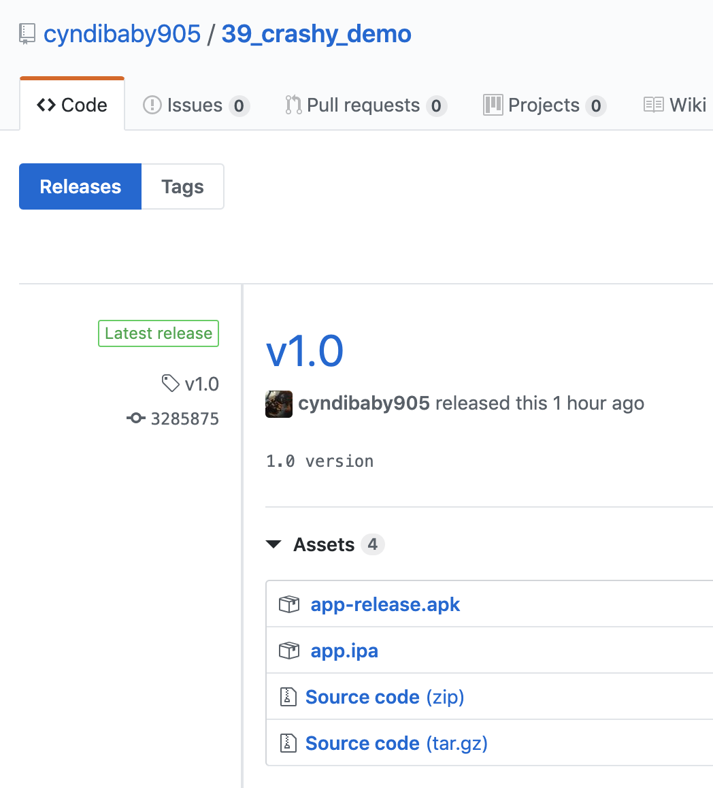
如何为 Flutter Module 工程引入自动发布能力？
这个例子介绍的是传统的 Flutter App 工程（即纯 Flutter 工程），如果我们想为 Flutter Module 工程（即混合开发的 Flutter 工程）引入自动发布能力又该如何设置呢？
其实也并不复杂。Module 工程的 Android 构建产物是 aar，iOS 构建产物是 Framework。Android 产物的自动发布比较简单，我们直接复用 apk 的发布，把 file 文件指定为 aar 文件即可；iOS 的产物自动发布稍繁琐一些，需要将 Framework 做一些简单的加工，将它们转换成 Pod 格式。
下面的例子演示了 Flutter Module 的 iOS 产物是如何实现自动发布的。由于 Pod 格式本身只是在 App.Framework 和 Flutter.Framework 这两个文件的基础上做的封装，所以我们只需要把它们拷贝到统一的目录 FlutterEngine 下，并将声明了组件定义的 FlutterEngine.podspec 文件放置在最外层，最后统一压缩成 zip 格式即可。
...# 对构建产物进行预处理，压缩成 zip 格式的组件before_deploy: - mkdir .ios/Outputs && mkdir .ios/Outputs/FlutterEngine - cp FlutterEngine.podspec .ios/Outputs/ - cp -r .ios/Flutter/App.framework/ .ios/Outputs/FlutterEngine/App.framework/ - cp -r .ios/Flutter/engine/Flutter.framework/ .ios/Outputs/FlutterEngine/Flutter.framework/ - pushd .ios/Outputs && zip -r FlutterEngine.zip ./ && popddeploy: provider: releases api_key: ${GITHUB_TOKEN} file: - .ios/Outputs/FlutterEngine.zip skip_cleanup: true on: tags: true...将这段代码提交后可以看到，Flutter Module 工程也可以自动的发布原生组件了。
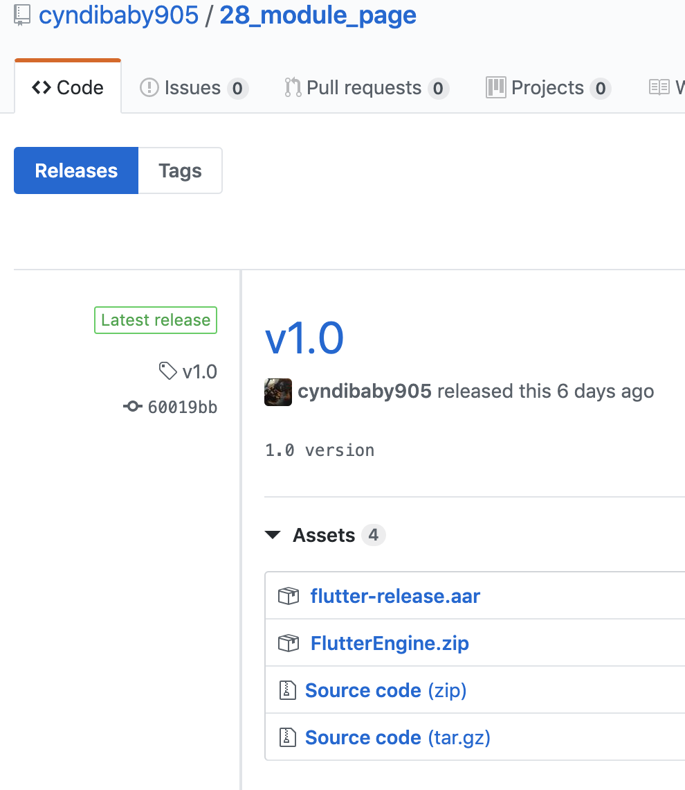
通过这些例子我们可以看到，任务配置的关键在于提炼出项目自动化运行需要的命令集合，并确认它们的执行顺序。只要把这些命令集合按照 install、script 和 deploy 三个阶段安置好，接下来的事情就交给 Travis 去完成，我们安心享受持续交付带来的便利就可以了。
总结
俗话说，“90% 的故障都是由变更引起的”，这凸显了持续交付对于发布稳定性保障的价值。通过建立持续交付流程链机制，我们可以将代码变更与自动化手段关联起来，让测试和发布变得更快、更频繁，不仅可以提早暴露风险，还能让软件可以持续稳定地保持在随时可发布的状态。
在今天的分享中，我与你介绍了如何通过 Travis CI，为我们的项目引入持续交付能力。Travis 的自动化任务的工作流依靠.travis.yaml 配置文件驱动，我们可以在确认好构建任务需要的命令集合后，在这个配置文件中依照 install、script 和 deploy 这 3 个步骤拆解执行过程。完成项目的配置之后，一旦 Travis 检测到代码变更，就可以自动执行任务了。
简单清晰的发布流程是软件可靠性的前提。如果我们同时发布了 100 个代码变更，导致 App 性能恶化了，我们可能需要花费大量时间和精力，去定位究竟是哪些变更影响了 App 性能，以及它们是如何影响的。而如果以持续交付的方式发布 App，我们能够以更小的粒度去测量和理解代码变更带来的影响，是改善还是退化，从而可以更早地找到问题，更有信心进行更快的发布。
需要注意的是，在今天的示例分析中，我们构建的是一个未签名的 ipa 文件，这意味着我们需要先完成签名之后，才能在真实的 iOS 设备上运行，或者发布到 App Store。
iOS 的代码签名涉及私钥和多重证书的校验，以及对应的加解密步骤，是一个相对繁琐的过程。如果我们希望在 Travis 上部署自动化签名操作，需要导出发布证书、私钥和描述文件，并提前将这些文件打包成一个压缩包后进行加密，上传至仓库。
然后，我们还需要在 before_install 时，将这个压缩包进行解密，并把证书导到 Travis 运行环境的钥匙串中，这样构建脚本就可以使用临时钥匙串对二进制文件进行签名了。完整的配置，你可以参考手机内侧服务厂商蒲公英提供的集成文档了解进一步的细节。
如果你不希望将发布证书、私钥暴露给 Travis，也可以把未签名的 ipa 包下载下来，解压后通过 codesign 命令，分别对 App.Framework、Flutter.Framework 以及 Runner 进行重签名操作，然后重新压缩成 ipa 包即可。这篇文章介绍了详细的操作步骤，这里我们也不再赘述了。
我把今天分享涉及的 Travis 配置上传到了 GitHub，你可以把这几个项目Dart_Sample、Module_Page、Crashy_Demo下载下来，观察它们的配置文件，并在 Travis 网站上查看对应的构建过程，从而加深理解与记忆。
思考题
最后，我给你留一道思考题吧。
在 Travis 配置文件中，如何选用特定的 Flutter SDK 版本（比如 v1.5.4-hotfix.2）呢？
欢迎你在评论区给我留言分享你的观点，我会在下一篇文章中等待你！感谢你的收听，也欢迎你把这篇文章分享给更多的朋友一起阅读。

COMMUNITY NOTES
读者评论
规模最大，大家最熟悉的应该是jenkins吧😄
请问现在把flutter用在生产环境最大的问题是什么呢？(没有足够的plugin?比如facebook login)(没有好的crash报告系统？比如crashlytics的崩溃信息基本没什么用)